This document HVCS Overview (Part A) is one part of a suite of documentation to help participants understand what is required to become a high value clearing system (HVCS) participant and how to send and receive individual HVCS instructions and NZD HVCS payments that the participant cannot revoke or reverse after settlement.
This document should be read in conjunction with the Payments NZ Rules (in particular, Part 9). Part 9 contains the HVCS clearing and settlement rules which specify the requirements for participants to create, exchange, settle, deliver and receive HVCS instructions and make HVCS payments (including SCPs) through HVCS. Part 2 contains the access and participation rules for an entity to join HVCS.
In addition to the Rules, the applicable HVCS standards (Appendix 14) which specify how participants comply with Part 9 are comprised of:
This section specifies how participants can determine whether the content of an applicable HVCS Standard in appendix 14 creates binding legal rights or obligations.
Rule 1.8 provides:
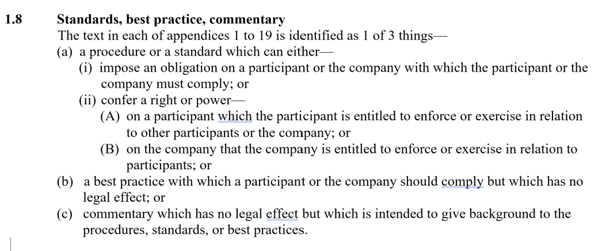
The HVCS rules and procedures are a multilateral contract that binds Payments NZ and direct settlement participants acting in various capacities including:
NOTE: It is important to understand that the terms 'instructing agent' and 'instructed agent' are also defined terms under the ISO 20022 standard. This means that the ISO 20022 standard might describe a person as an 'instructing agent' or an 'instructed agent' even if they are not a HVCS participant. However, the Rules have narrowed these definitions from their meaning under the ISO 20022 standard. This means that whenever these terms are used in the Rules and the HVCS Standards, it is referring to HVCS participants only that fulfil the role of an instructing agent or an instructed agent.
The multilateral contract does not bind other third parties involved in the HVCS clearing process like debtors, who are customers of debtor agents (often acting as the instructing agent), or creditors, who are customers of creditor agents (often acting as the instructed agent).
If the HVCS rules and the procedures give a participant a right:
Although the rules and procedures can't bind debtors or creditors, rule 9.8 requires participants to ensure that the terms and conditions of each agreement between the participant and an HVCS debtor or creditor are consistent with the HVCS rules. Payments NZ recommends standard terms and conditions that relate to 1 type of HVCS payment — an SCP — that participants can include in their terms and conditions with SCP customers in chapter 2 of the SCP Procedures.
| Rules | A — HVCS Overview | B — HVCS Common Procedures | C — SCP Procedures | D — MX Messaging Procedures | E — MT Messaging Procedures | F — Co-existence Procedures |
|---|---|---|---|---|---|---|
|
|
|
|
|
|
|
Changed to past tense
Qualified the removal of messaging to payment messaging from November 2025.
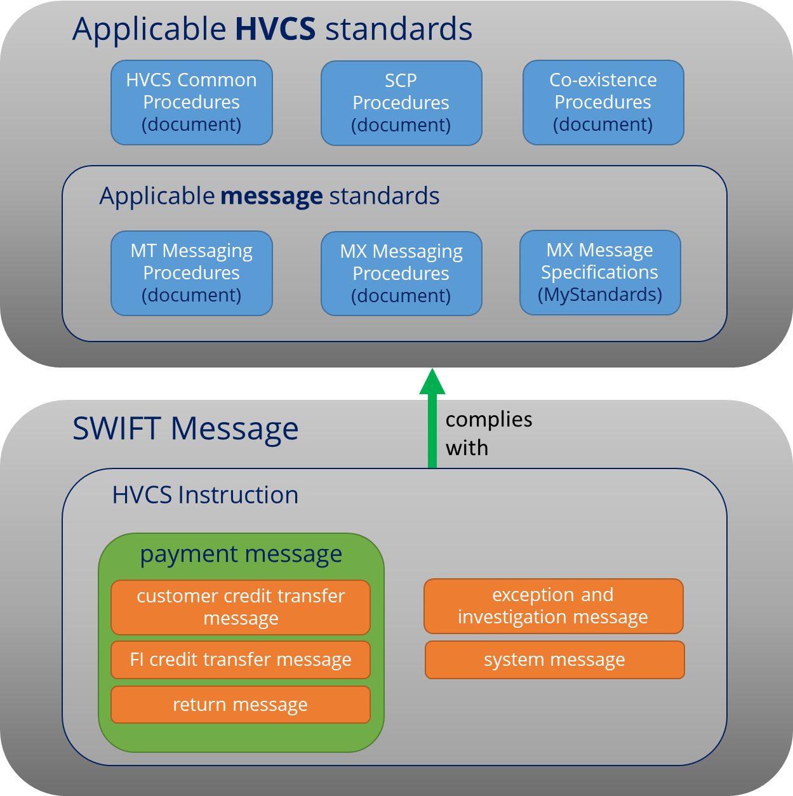
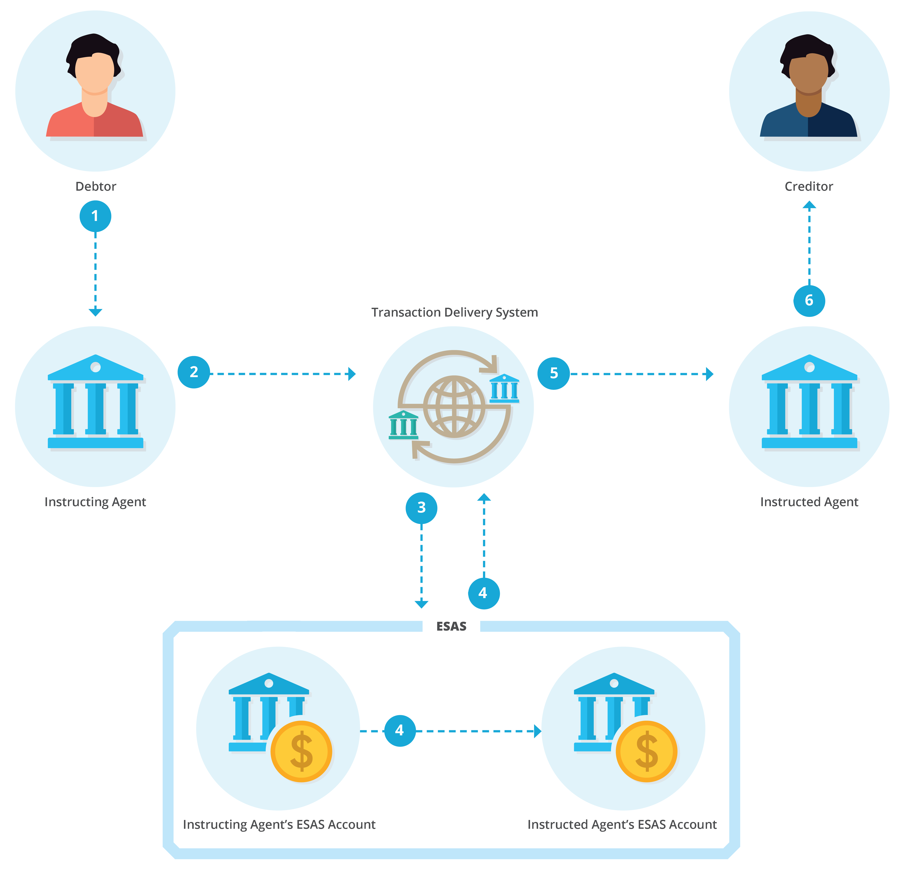
| Arrow | Settlement of HVCS payments | Rule |
|---|---|---|
| 1 | The debtor sends a payment instruction to the instructing agent. | clause 1.1, HVCS Common Procedures |
| 2 | The instructing agent sends an payment message using the AVP CUG transaction delivery system. | 9.10 |
| 3 | SWIFT's transaction delivery system sends a settlement request to ESAS. | N/A |
| 4 |
ESAS—
|
9.13 |
| 5 | The transaction delivery system delivers the payment message to the instructed agent. | N/A |
| 6 | The instructed agent credits the creditor's account. | N/A |
The HVCS is used to make large payments quickly. HVCS payments are:
Therefore:
Changed to past tense, note MT payment messages retired
Requirement to join both CUGs retained for the time being.
Requires discussion with RBNZ to understand whether they need Participants to remain in the longer term.
Changed payment message requirements to AVP MX CUG Member
| Payment category | Sub type | # | Product / Scenario | Currency | Debtor agent | Creditor agent | Example use case |
|---|---|---|---|---|---|---|---|
| Customer Credit Transfer | Domestic (NZD) | 1 | Same Day Cleared Payment | NZD | AVP MX CUG Participant | Participant or financial institution customer of Participant | NZD SCP for settlement to customer of a Participant |
| 2 | Other NZD Customer Payment | NZD | AVP MX CUG Member | AVP MX CUG Member | NZD payment to foreign currency account of a customer of an AVP MX CUG member | ||
| Cross border payment redirection | 3 | Initiated overseas for domestic creditor | NZD or NZD converted from foreign Currency | Foreign financial institution | Participant or financial institution customer of participant | NZD or foreign currency converted to NZD for settlement to customer of a participant | |
| 4 | Initiated domestically for overseas creditor | NZD | AVP MX CUG member | Foreign financial institution | Payment message created by a participant routed to another participant prior to routing overseas | ||
| 5 | Initiated overseas for overseas creditor | NZD | Foreign financial institution | Foreign financial institution | NZD serial payment between two foreign financial institutions who hold NZD Nostro accounts each with a different participant | ||
| FI to FI Credit Transfer | Core | 6 | Payment between two financial institutions | NZD | AVP MX CUG member or financial institution customer of participant or foreign financial institution | AVP MX CUG member or financial institution customer of participant or foreign financial institution | CLS Settlement, Vostro Payment |
| Cover | 7 | Cover leg of direct and cover payment | NZD |
AVP MX CUG member or
agent of participant or foreign financial institution
|
AVP MX CUG member or
financial institution customer of participant or foreign financial institution
|
Cover for a credit transfer to a customer of an AVP CUG member |
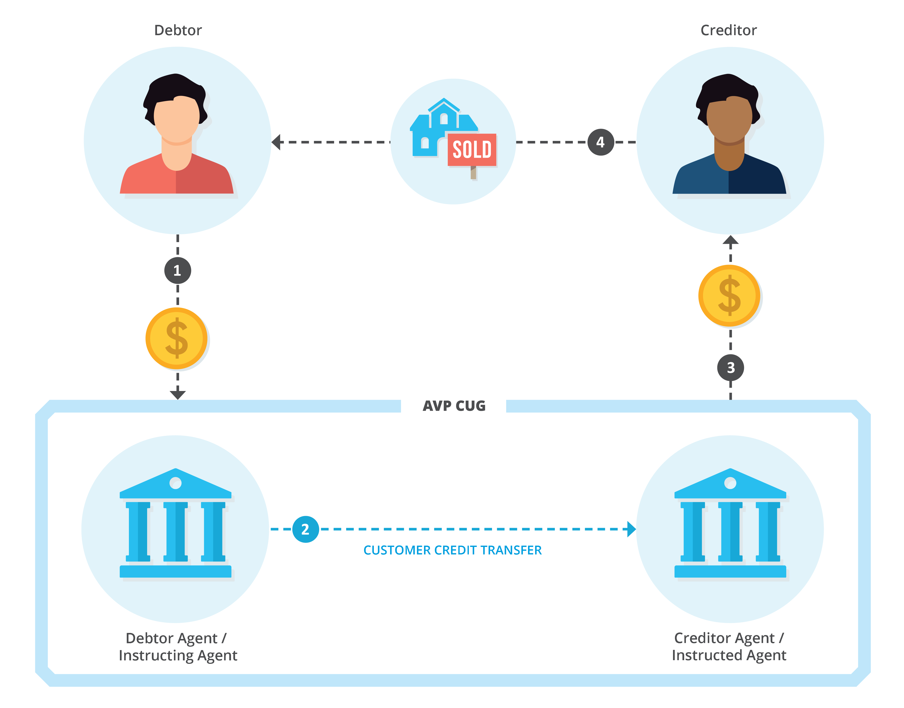
| Step | Action |
|---|---|
| 1 | A debtor instructs the debtor agent to make an NZD payment to the customer of the creditor agent. |
| 2 |
The instructing agent creates a customer credit transfer message that includes
requirements for SCPs and sends the payment message to the instructed agent using
the SWIFT transaction delivery system through the AVP CUG.
If the debtor agent is not the instructing agent, the debtor agent needs to have
an arrangement with an instructing agent to send payment messages to give effect
to their customer's payment instruction.
|
| 3 |
The creditor agent credits the creditor's account with the amount of the HVCS payment.
If the creditor agent is not the instructed agent, the creditor agent needs to have an
arrangement with an instructed agent to enable their customer to receive the amount of
the HVCS payment.
|
| 4 | Neither the debtor, the debtor agent nor the instructing agent can revoke the SCP payment after the HVCS payment settles and the creditor can rely on the payment to, for example, transfer title of the creditor's house to the debtor. |
Removed text:
"This section applies to MX messages only."
The following are provided as examples for the overview. For detail of all scenarios, please see the applicable message standards.
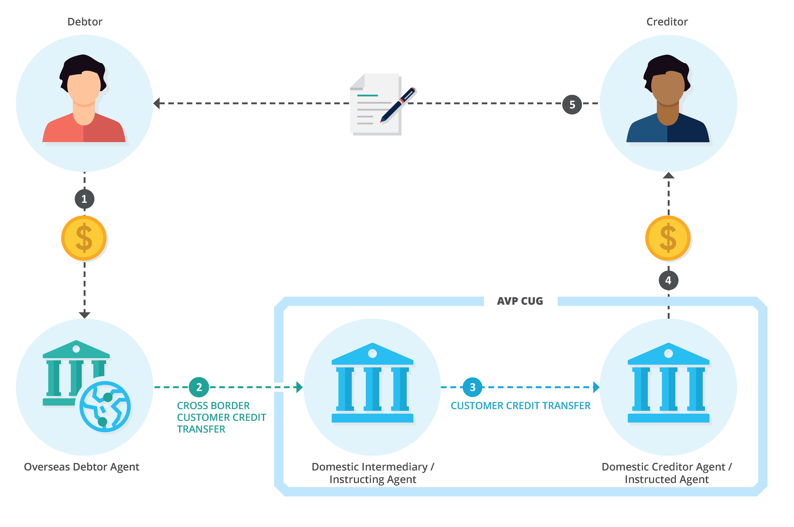
| Step | Action |
|---|---|
| 1 | The debtor instructs an overseas bank to make an NZD payment to the creditor of the creditor agent. |
| 2 |
The overseas bank (debtor agent) has an NZD account with the instructing agent (the domestic intermediary).
The debtor agent instructs the instructing agent to debit their NZD account and to pay the creditor using
a customer credit transfer message.
|
| 3 | The instructing agent debits the overseas bank's NZD account, creates a cross border redirection using a customer credit transfer message and sends the HVCS payment to the instructed agent for settlement in ESAS using the AVP CUG transaction delivery system. |
| 4 |
The instructed agent credits the creditor's account with the amount of the HVCS payment.
If the creditor agent is not an instructed agent, the creditor agent needs to have an arrangement
with an instructed agent to enable their customer to receive the amount of the HVCS payment.
|
| 5 | The instructing agent cannot reverse the cross border redirection after settlement and the creditor can rely on the payment to complete a linked transaction, for example, delivering goods to the payer. |
The following are provided as examples for the overview. For detail of all scenarios, please see the applicable message standards.
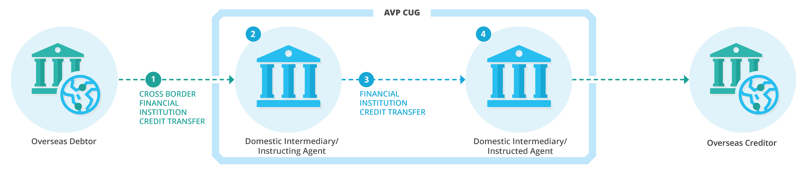
| Step | Action |
|---|---|
| 1 |
An overseas debtor or debtor agent:
The creditor or creditor agent has an NZD account with another participant (the
instructed agent in the diagram).
|
| 2 | The instructing agent debits the debtor/debtor agent's NZD account. |
| 3 | The instructing agent sends an FI credit transfer to the instructed agent using the AVP CUG transaction delivery system. |
| 4 | The instructed agent credits the creditor/creditor agent's NZD account with the amount of the HVCS payment. |
| 5 | The debtor/debtor agent cannot reverse the payment after settlement. |
The following are provided as examples for the overview. For detail of all scenarios, please see the applicable message standards.
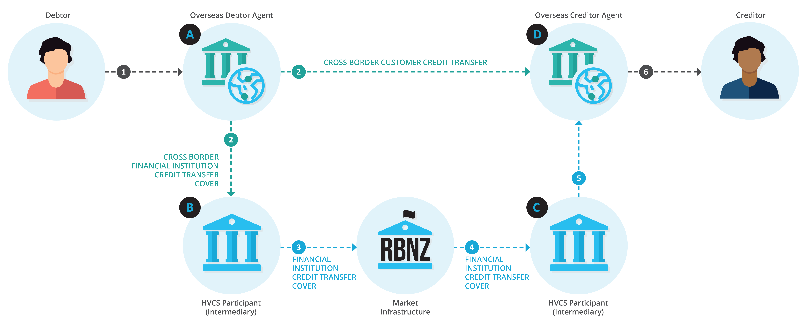
| Step | Action |
|---|---|
| 1 | A debtor instructs their overseas bank (debtor agent) to make an NZD payment to a creditor. |
| 2 |
The overseas debtor agent
|
| 3 | The correspondent bank participant debits the debtor agent's NZD account. |
| 4 | The correspondent bank participant, as instructing agent, sends an FI cover message to the correspondent bank of the creditor agent, as instructed agent using the AVP CUG transaction delivery system. |
| 5 | The instructed agent credits the creditor agent's NZD account with the amount of the HVCS payment. |
| 6 | When the creditor agent's account is credited, the creditor agent has the money to comply with the payment instruction in the customer credit transfer message (received under step 2). The creditor agent credits the creditor's account. The debtor cannot reverse the HVCS payment after settlement and the creditor can rely on the HVCS payment to complete a linked transaction, for example, provide goods or services to the debtor. |
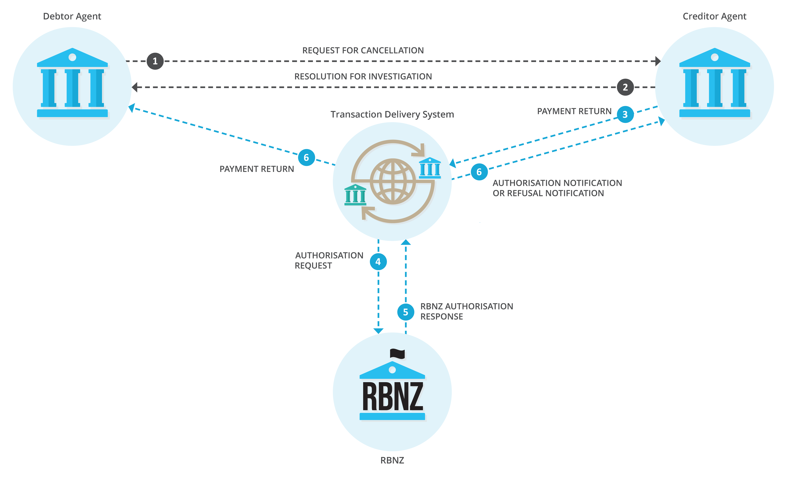
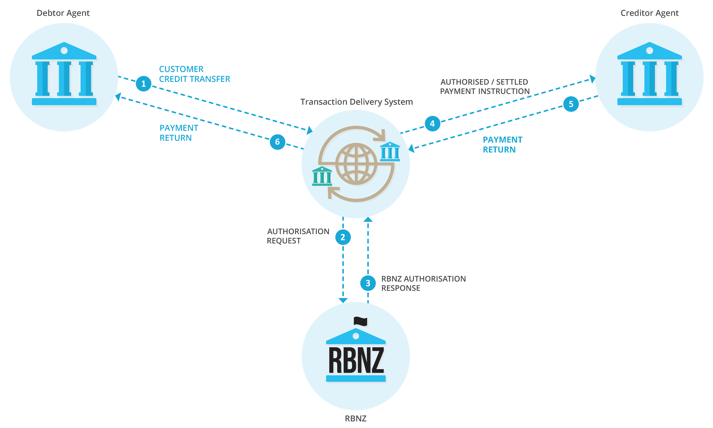
| Step | Action |
|---|---|
| 1 | Debtor initiates a payment instruction to the debtor agent. |
| 2 | Debtor agent initiates a payment message to the creditor agent using the transaction delivery system. |
| 3 | The HVCS payment is settled via the AVP CUG, whereby the HVCS payment is released to the creditor agent. |
| 4 | Having received the HVCS payment, the creditor agent recognises the HVCS payment cannot be processed as requested e.g. the creditor's account is closed. The creditor agent returns the HVCS payment to the debtor agent using a return message also including the return reason code. |
| 5 | The market infrastructure returns the HVCS payment performing the necessary settlement posting between the creditor agent and the debtor agent. |
For the sentence starting "Authorised messages...", changed to "Payment messages..."
Payment message flow
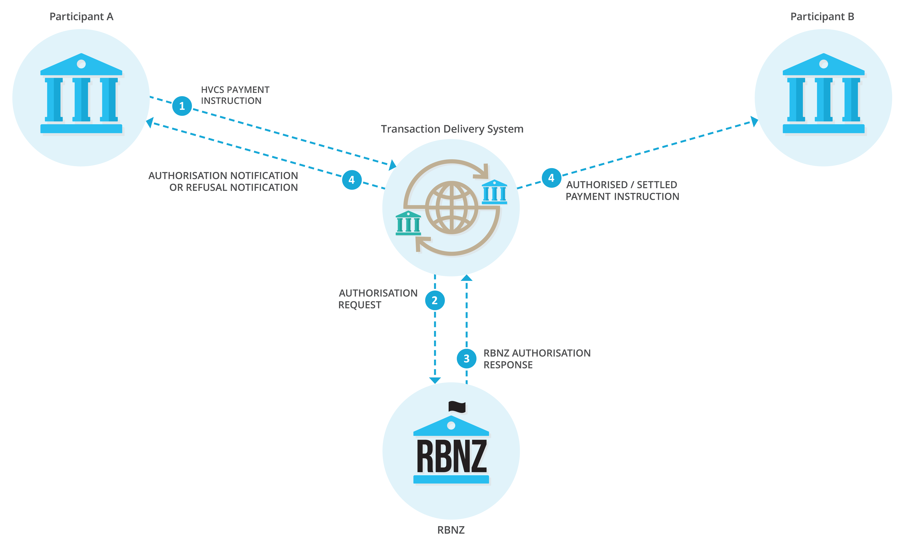
| Term | Definition | ||||||||||||||||||||||||||||||||||||||||||||||||
|---|---|---|---|---|---|---|---|---|---|---|---|---|---|---|---|---|---|---|---|---|---|---|---|---|---|---|---|---|---|---|---|---|---|---|---|---|---|---|---|---|---|---|---|---|---|---|---|---|---|
| AVP CUG |
Is the closed user group provided by SWIFT for HVCS message processing. The Reserve Bank is the AVP CUG
service administrator. The service administrator determines:
Removed refereence to 'or SWIFT NetCopy' Removed refereence to 'or SWIFT NetCopy' Members of the AVP CUG exchange HVCS instructions with each other using SWIFT FINCopy in Y mode.
Further information on how to prepare to join the AVP CUG and the process to join the AVP CUG
is provided by the RBNZ here. AVP CUG members who are participants and their BICs are:
Participants should be aware there are also members of the AVP CUG that send and receive messages but
are not participants. Their BICs are:
|
||||||||||||||||||||||||||||||||||||||||||||||||
| CLS (Continuous Linked Settlement) |
Replaced MT202 with pacs.009 Is the largest multicurrency cash settlement system in the world, with links to RTGS
systems in 18 currencies (including the NZ dollar). CLS settles payment instructions
relating to FX spot, forwards, swaps, option exercises, non-deliverable forwards and
credit derivatives. CLS offers a 5 hour window in each CLS daily settlement cycle,
during which linked RTGS systems are open and can make and receive payments using the
SWIFT network. CLS Bank International (a company incorporated in the United States)
operates CLS. Some participants operate a CLS evening session to settle and deliver
FI credit transfer messages (pacs.009) for payments to and from CLS Bank.
|
||||||||||||||||||||||||||||||||||||||||||||||||
| Instructed agent |
Is the participant who:
|
||||||||||||||||||||||||||||||||||||||||||||||||
| Instructing agent |
Is the participant who:
|
||||||||||||||||||||||||||||||||||||||||||||||||
| NZ Clear |
Is a real-time settlement system that provides the financial markets with clearing
and settlement services for high value debt securities and equities:
|
||||||||||||||||||||||||||||||||||||||||||||||||
| Reserve Bank |
|
||||||||||||||||||||||||||||||||||||||||||||||||
| SWIFT | Is a member-owned co-operative society under Belgian law supplying standardised messaging services and interface software to financial institutions. SWIFT means the Society for Worldwide Interbank Financial Telecommunication. |
| Term | Definition |
|---|---|
| ESAS |
Is the system that holds the settlement accounts of financial institutions and enables the
instructing agent to send a payment instruction to settle the HVCS payment by transferring
the value from the instructing agent's settlement account to the instructed agent's settlement
account.
ESAS is owned, operated, and managed by the Reserve Bank.
|
| SWIFT FIN |
Is a messaging service that enables financial institutions to exchange SWIFT messages in MT
format in store-and-forward mode. For more information see appendix 14E: MT Messaging
Procedures.
SWIFT FIN is owned, operated, and managed by SWIFT.
|
| SWIFT FINplus |
Added definition. Is a messaging service that enables financial institutions to exchange SWIFT messages in MX
format in store-and-forward mode. The FINplus service is typically used to send cross-border
payment messages between correspondent banking partners using the CBPR+ message format.
SWIFT FINplus is owned, operated, and managed by SWIFT.
|
| SWIFT FINCopy |
Removed definition. |
| SWIFTNet Copy |
Removed reference to FINCopy. The ISO 20022 service that delivers Y-copy capability for a SWIFT Closed User Group (CUG).
It is deployed when a market infrastructure needs its own SWIFTNet service for MX messages.
SWIFTNet Copy is owned, operated, and managed by SWIFT.
|
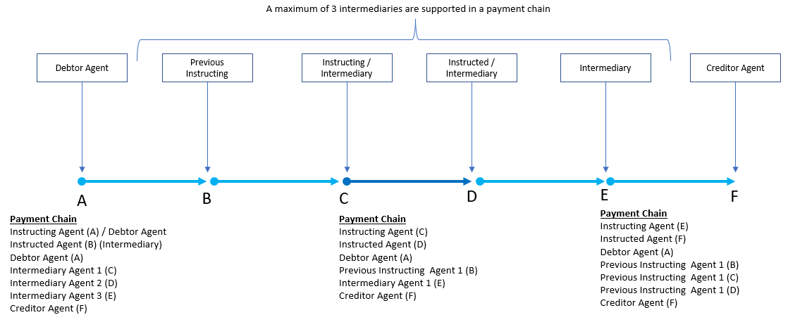
| Sequence | Term | Definition |
|---|---|---|
| 1 | Ultimate Debtor | The party that ultimately owes the amount of money to the ultimate creditor. |
| 2 | Debtor | The party that owes the amount of money to the creditor. |
| 3 | Initiating Party | Party that initiates the payment (the instructing agent). |
| 4 | Debtor Agent | Financial Institution providing an account for the debtor. |
| 5 | Previous instructing agent | Agent immediately prior to the instructing agent. |
| 6 | Intermediary Agent | Agent between the debtor's and creditor's agents (may include the instructing agent, the instructed agent and previous instructing agents). |
| 7 | Creditor Agent | Financial institution providing an account for the creditor. |
| 8 | Creditor | Party to which an amount of money is due from the debtor. |
| 9 | Ultimate Creditor | Ultimate party to which an amount of money is due. |
The following table lists some of the legislation, rules, standards, procedures, by-laws, codes and contracts that may apply to clearing and settlement of an HVCS instruction.
No legislation directly regulates HVCS clearing and settlement in New Zealand. Some legislation indirectly affects HVCS clearing and settlement, for example:
Added next two examples.
| Term | Definition |
|---|---|
| SWIFT requirements | SWIFT members must comply with SWIFT's Corporate Rules and SWIFT By-Laws available at www.swift.com |
| AVP CUG service administration agreement |
Under the SWIFT service administration agreement between the Reserve Bank and SWIFT, the Reserve Bank:
|
| AVP CUG service parameters |
For AVP MT CUG service parameters, please refer to Part E MT Messaging Procedures (ISO 15022).
What is the replacement for the RBNZ Confluence website? For AVP MX CUG service parameters, please refer to the RBNZ Confluence website, here.
|
| Payments NZ rules and standards |
The Payments NZ rules and procedures are the principal rules regulating HVCS clearing and settlement in
New Zealand. They are a multilateral contract that bind agents who are a direct settlement participants
acting in various capacities including:
|
| ESAS terms and conditions | A contract between each ESAS settlement accountholder and the Reserve Bank governing the operation of the accountholder's ESAS settlement account. |
| ESAS BCP | A business continuity plan developed between the Reserve Bank and ESAS settlement accountholders specifying the business continuity processes that apply if there is a problem with ESAS. |
| Term | Definition |
|---|---|
| AML/CTF | Anti-Money Laundering / Counter-Terrorism Financing |
| ASCII | American Standard Code for Information Interchange (ISO646 code for characters) |
| Branch Number | is a four-digit number that identifies banks and branches across New Zealand |
| Beneficiary, beneficiary customer | is the ultimate recipient of funds transferred under a customer credit transfer message. |
| Beneficiary institution | is the financial institution designated by the ordering institution as the ultimate recipient of the HVCS payment or funds transferred under an FI credit transfer message. |
| Beneficiary notification |
a notification to the creditor of an SCP:
|
| BIC - Business Identifier Code. |
BIC is an international standard for routing business transactions and identification of business
parties. BICs consist of:
|
| BIC 8 | An 8-character BIC, also known as a 'party identifier' which does not include the 3-character branch code. |
| BAH | Business Application Header is an MX message definition which can be combined with any other MX message definition to form a business message. |
| camt | Cash Management messages, used for exception and investigation messaging in relation to HVCS and cross-border payments. |
| CBPR+ | Cross-Border Payments and Reporting Plus. ISO 20022 global usage guidelines for cross-border payments developed by SWIFT and the PMPG. |
| Creditor agent | A financial institution servicing an account for the creditor. |
| Debtor agent | A financial institution servicing an account for the debtor. |
| ESAS | Exchange Settlement Account System. |
| FileAct | An automated SWIFT messaging service designed to enable customers to exchange files. FileAct supports both interactive and store-and-forward modes. It is particularly suited for the exchange of large volumes of data. |
| FINplus | A SWIFTNet messaging service which enables financial institutions to exchange SWIFT messages in MX format for securities and payments, currently supporting CBPR+ messaging. |
| gCASE gpi | Case Resolution, SWIFT's cloud-based payment investigation and resolution service. |
| gCCT gpi | Customer Credit Transfer is the first service launched as part of the gpi initiative and focuses on interbank customer-initiated payments. |
| gCOV gpi | Cover Payments is part of the gCCT service and SWIFT gpi Rulebook for Mandatory Services. |
| gpi | Global Payment Initiative, also known by the acronym “gpi”, is a service launched by SWIFT to improve the customer-bank experience in the world of international payments. |
| HVCS | High Value Clearing System. |
| HVPS+ | High Value Payments Plus. A task force formed by SWIFT, along with major global banks and market infrastructures responsible for developing ISO 20022 global usage guidelines for high-value payments. |
| IFTI | International Funds Transfer Instruction. |
| Instructing agent | Agent that instructs the next agent in the chain to carry out the payment instruction. |
| Instructed agent | Agent that is instructed by the previous agent in the chain to carry out the payment instruction. |
| InterAct | Global financial messaging service used by the SWIFTNet platform. |
| Intermediary agent |
For a payment instruction sent through SWIFT, a financial institution:
|
| ISO | International Organization for Standardization. |
| ISO 20022 | A message standard for financial markets developed and maintained by ISO. |
| LDAP | Lightweight Directory Access Protocol. A lightweight client-server protocol for accessing directory services, specifically X.500-based directory services. LDAP runs over TCP/IP or other connection-oriented transfer service. |
| LEI | Legal Entity Identifier. A 20 character unique identifier allocated to organisations using the ISO 17442 format. |
| Ordering customer |
MT terminology - removed. |
| Ordering institution |
MT terminology - removed. |
| pacs | A subset of the ISO 20022 base standard message definitions for payment clearing and settlement. |
| pain | A subset of the ISO 20022 base standard message definitions for payments initiation. |
| PMPG |
The Payments Market Practice Group is an international forum, facilitated by SWIFT, that assists
industry participants formulate better market practices, including the recommended use of standards.
Further details on the group can be found at:
https://www.swift.com/about-us/community/swift-advisory-groups/payments-marketpractice-group.
|
| Point-to-point reference | A reference included within a SWIFT message sent from one financial institution to another that has specific meaning for those two institutions though has no relevance for other parties in the end-to-end messaging flow. |
| Remitter confirmation |
A notification to the debtor of an SCP:
|
| Remitter notification |
A notification to the debtor of an SCP:
|
| RTGS | Reserve Bank Real Time Gross Settlement used for interbank settlement in HVCS. |
| Sending confirmation | For an SCP between customers of 2 participants, is a notification to the creditor of an SCP from the instructing agent that it has settled the funds with the instructed agent. |
| STP | Straight Through Processing. |
| SWIFT | Society for Worldwide Interbank Financial Telecommunication. |
| SWIFT FIN (FIN) | A SWIFT messaging service that enables the exchange of MT messages. |
| SWIFT InterAct (InterAct) | A SWIFT service that enables the exchange of MX messages. |
| SWIFT MT (MT) | SWIFT Message Type (MT) messages. (ISO 15022 Standard). |
| SWIFTNet | The SWIFT service that enables the exchange of MX messages, which is based on the InterAct financial messaging service. |
| SWIFTNet Header | Part of the envelope of an MX message which contains elements to address the MX message to the correct SWIFTNet service or CUG. |
| UETR | Unique Electronic Transaction Reference. |
| Usage Guideline | Usage Guidelines are a combination of the ISO 20022 base standard message definition plus restrictions that adapted the specifications to meet local market practice. The Usage Guideline can also include additional commentary to explain how local instructions should be constructed for specific scenarios. In the New Zealand context, the Usage Guidelines that apply to HVCS are contained in the MX Message Specifications. MX Message Specifications are sometimes referred to as Message Usage Guidelines (MUGs). |
| UTF8 | Unicode (or Universal Coded Character Set) Transformation Format — 8-bit. |
| XML | Extensible Markup Language. |
| Y-Copy | A copying mode of a SWIFT service where payment messages are authorised by market infrastructure (e.g. RBNZ's RTGS) before they are delivered to the intended recipient. |
| Version number and description of amendment | Amendment method and date | Amendment notice date | Effective date of amendment | Authors |
|---|---|---|---|---|
| Version 2. Amendments to remove testing requirements in chapter 3 and to transfer substance of appendix 3 to version 1 of appendix 1, access procedures. | Board resolution: 19 February 2013 | 25 Feb 13 | 20 May 13 | Payments NZ |
| Version 3. Amendments to change title and appendix no. | Chief executive amendment: 14 May 2013 | 14 May 13 | 10 Jul 13 | Payments NZ |
| Version 4 Amendments to change title and appendix no. as a consequence of the creation of the mobile device standards | Chief executive amendment: 13 March 2014 | 13 Mar 2014 | 14 May 2014 | Caroline Kidd Frank Susko |
| Version 5: Rewrite to create end-to-end clearing and settlement procedures linked to Part 9 of the rules for HVCS and to capture improvements to SCPs Reformat in information mapping style. | Board resolution: 2-Dec-14 | 8 Dec 2014 | 16 Feb 2015 | Simon Jensen, Katie Williams, Caroline Kidd, Frank Susko |
|
Version 6: Amendments to reflect amendments to require participants to email SCP
notifications.
Amendments to update out-of-date references to the AVP CUG service parameters and
to reflect amendments to Part 2
|
Board resolution: 15-Dec-15
Chief executive amendment: 21 December 2015
|
21 Dec 2015 | 29 Feb 2016 | Caroline Kidd, Frank Susko |
|
Version 7: Minor amendments to chapter 3, sections C2 and C3
Amendments to clarify the characters required for email notifications and remove
out-of-date references to facsimile notices
|
CE amendment 17 November 2016
MC amendment 17 November 2016
|
17 Nov 2016 | 31 Jan 2017 | Simon Jensen, Katie Williams, Caroline Kidd Frank Susko |
| Version 8: Amendments to remove references to Deutsche Bank | CE amendment 19 December 2016 | 19 Dec 2016 | 27 Feb 2017 | Jade Ford |
| Version 9: Amendments to consolidate HVCS and SBI requirements for reporting operational problems and business continuity, by deleting requirements in relation to reporting operational problems, compliance testing and compliance reporting and transfer to new operational problem procedures and new compliance procedures. | Board resolution: 11 April 2017 | 10 May 2017 | 10 Jul 2017 | Buddle Findlay: Simon Jensen, Katie Williams, Payments NZ: Caroline Kidd, Frank Susko |
| Version 10: Amendments to format fields in MT103, MT202 COV and MT205 COV messages for the SWIFT standard change (SR2020). | HVCS management committee notice to the chief executive and approval by the chief executive: 18-Jul-2017 | 19 Jul 2017 | 25 Sep 2017 | Murray Goold, Martin Quin |
| Version 11: Consequential amendments as a result of the introduction of a new compliance regime. | Board resolution: 26 February 2018 (technical or minor changes approved by the chief executive) | 5 Mar 2018 | 14 May 2018 | Payments NZ |
| Version 12: Amendments to appendix 14A to ensure standards align with SWIFT standards |
Management committee resolution: 6 June 2018
Chief executive amendment: 6 Jun 2018
|
6 Jun 2018 | 13 Aug 2018 | Murray Goold, Gary Lloyd, Martin Quin |
| Version 13: Amendments in relation to field 72 in the HVCS message formats to, amongst other things, allow participants to manage liquidity in their ESAS accounts. | Management committee amendment: 22 Feb 2019 | 27 Feb 2019 | 6 May 2019 | Buddle Findlay, Payments NZ |
| Version 14: Amendments as result of changes to ESAS | Board resolution: 11 December 2019 | 17 Dec 2019 | 24 Feb 2020 | Buddle Findlay, Payments NZ Ltd |
| Version 15: Add reference to ASX in the table at, ch 1, B1. | CE amendment 21 May 2020 | 21 May 2020 | 27 Jul 2020 | Payments NZ Ltd |
| Version 16: Minor amendments to the use of the term ESAS | Board resolution 7 December 2020 | 10 Dec 2020 | 1 Mar 2021 | Buddle Findlay, Payments NZ Ltd |
| Version 17: Minor amendments to references to the SBI procedures as a result of the settlement windows provisions. | Board resolution 7 December 2020 | 10 Dec 2020 | 31 May 2021 | Buddle Findlay, Payments NZ Ltd |
| Version 18: Minor updates to commentary including recording of ESAS rejection codes | Board resolution 3 May 21 and chief executive amendment 7 May 2021 | 7 May 2021 | 12 Jul 2021 | Buddle Findlay, Payments NZ Ltd |
New paragraph for additional context